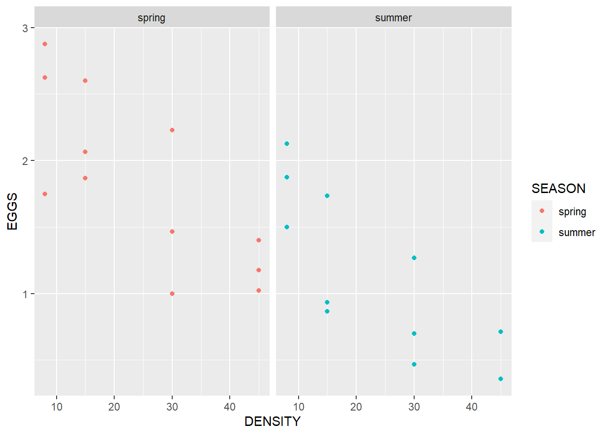
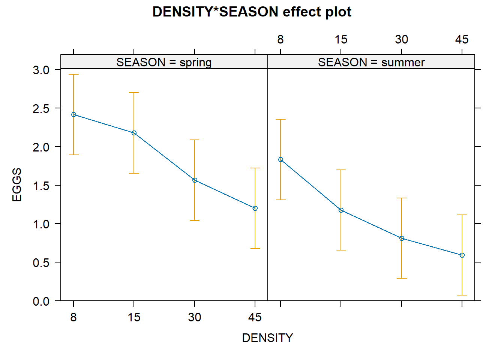

# get thedata
df <- read.csv("data/quinn.csv")Two-way ANOVA (fixed effects)
A two-way ANOVA (Analysis of Variance) is a statistical method used to examine the influence of two different categorical independent variables (factors) on a continuous dependent variable. It helps determine whether there are any statistically significant differences between the means of groups that are categorized based on these two factors. It also allows for the exploration of possible interactions between the two factors.
Key Elements:
Factors: These are the independent variables. Each factor can have two or more levels (groups).
- For example, you might look at Factor 1: Type of Diet (e.g., diet A, diet B) and Factor 2: Exercise Level (e.g., low, medium, high).
Dependent Variable: This is the continuous variable being measured across the groups.
- For example, you might measure the Weight Loss as the dependent variable.
Types of Effects:
Main Effects:
- These test whether the levels of each factor alone (independent of the other factor) have a significant effect on the dependent variable. In the example above, the main effects would tell you if either diet or exercise level independently affect weight loss.
Interaction Effect:
- This tests whether the effect of one factor depends on the level of the other factor. For example, does the impact of the diet on weight loss depend on the exercise level?
Practical example
Data we’ll use: quinn.csv (chap 9), boîte 9.4 p.224 Quinn & Keough
Box 9.4 Worked example of two factor fixed effects ANOVA
Quinn (1988) examined the effects of season (winter/spring and summer/autumn) and adult density (8, 15, 30 and 45 animals per 225 cm2 enclosure) on the production of egg masses by intertidal pulmonate limpets (Siphonaria diemenensis). There were three replicate enclosures per treatment combination and the response variable was the number of egg masses per limpet in each enclosure.
The null hypotheses were as follows.
No difference between mean number of egg masses laid in each season, pooling densities.
No difference in mean number of egg masses laid at each density, pooling seasons.
No interaction between season and density, i.e. the effect of density on mean numbers of egg masses laid is independent of season and vice versa.
# view the data
DT::datatable(df)A plot to understand the data
library(ggplot2)
ggplot(data = df, aes(x = DENSITY, y = EGGS, color = SEASON)) +
geom_point() +
facet_wrap(~SEASON)
Three observations for each category of DENSITY and SEASON.
Turn them into groups/factors
Categorical variables should be changes to factor first!
df$DENSITY <- as.factor(df$DENSITY)
df$SEASON <- as.factor(df$SEASON)
# check how many of each group
table(density = df$DENSITY, season = df$SEASON) season
density spring summer
8 3 3
15 3 3
30 3 3
45 3 34 types of density with 3 replications per season (spring, summer)
Two-way ANOVA analysis
We will examine the influence of DENSITY and SEASON (two categorical independent variables) on EGGS (continuous dependent variable). We will determine whether there are any statistically significant differences between the means of groups (DENSITY and SEASON) that are categorized based on these two factors.
model <- aov(EGGS ~ DENSITY*SEASON, data = df)
summary(model) Df Sum Sq Mean Sq F value Pr(>F)
DENSITY 3 5.284 1.761 9.669 0.000704 ***
SEASON 1 3.250 3.250 17.842 0.000645 ***
DENSITY:SEASON 3 0.165 0.055 0.301 0.823955
Residuals 16 2.915 0.182
---
Signif. codes: 0 '***' 0.001 '**' 0.01 '*' 0.05 '.' 0.1 ' ' 1Interpretation: significant effects of DENSITY and SEASON, but no significant effect of their interaction.
However, the effects of DENSITY and SEASON on EGGS are the same in all categories?
Multiple comparisons: Tukey
The Tukey multiple comparison test is used after conducting an ANOVA to identify which specific groups’ means are different from each other.
TT <- agricolae::HSD.test(model, trt = 'DENSITY')
TT$statistics
MSerror Df Mean CV MSD
0.1821655 16 1.47175 29.00006 0.7050067
$parameters
test name.t ntr StudentizedRange alpha
Tukey DENSITY 4 4.046093 0.05
$means
EGGS std r se Min Max Q25 Q50 Q75
15 1.6775000 0.6710800 6 0.1742438 0.867 2.600 1.13300 1.7995 2.01600
30 1.1883333 0.6265169 6 0.1742438 0.467 2.230 0.77500 1.1335 1.41625
45 0.8961667 0.3765376 6 0.1742438 0.356 1.400 0.71100 0.8665 1.13825
8 2.1250000 0.5303301 6 0.1742438 1.500 2.875 1.78125 2.0000 2.50000
$comparison
NULL
$groups
EGGS groups
8 2.1250000 a
15 1.6775000 ab
30 1.1883333 bc
45 0.8961667 c
attr(,"class")
[1] "group"We observe the assigned letters (a,b and c) for the categories of DENSITY.
How to interpret:
Categories with the same letters present same mean. Categories 8 and 15 received the letter ‘a’, so it means that their means don’t differ. Category 8 and 45 don’t have any letter in common, which means that their mean is different. Categories 8 and 30 have different means too.
Visualizations of the effect
plot(effects::allEffects(model))